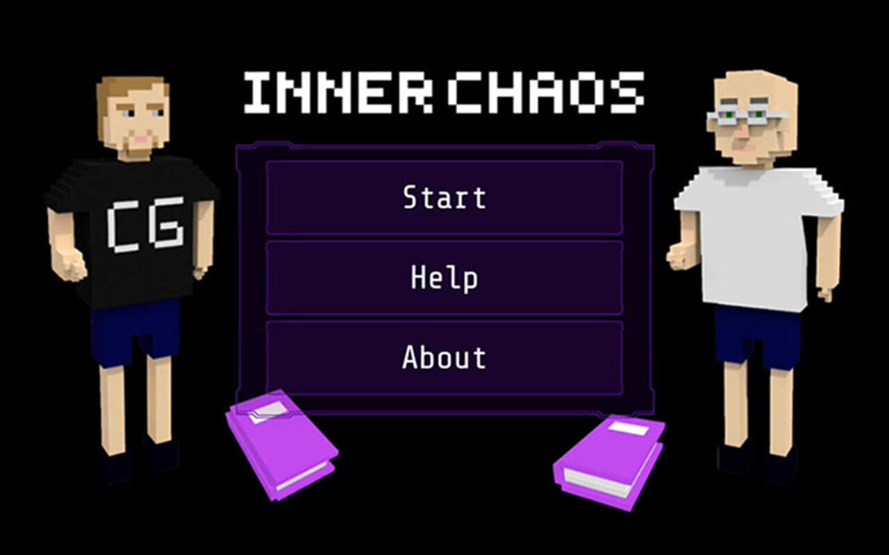
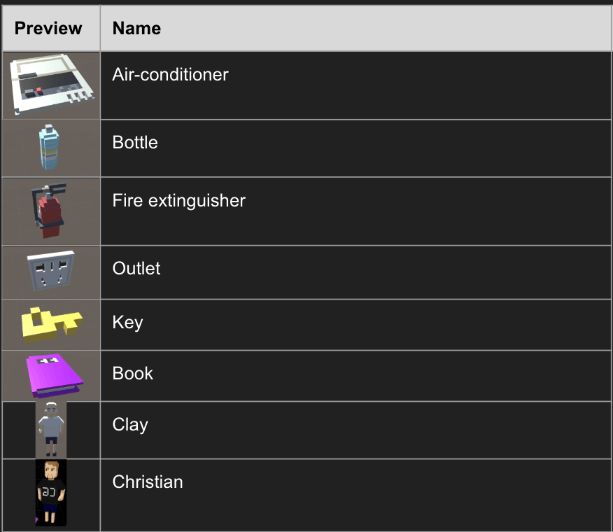
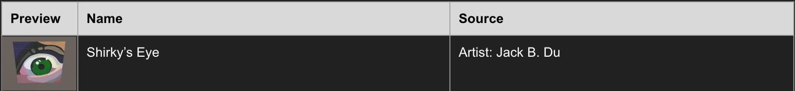

Inner Chaos
Spring 2017, Shanghai
Role: Game Designer, UI Designer, 3D Model Designer, Software Developer
Inner Chaos is an Augmented Reality game developed by Zeyao, Shirley and Collin. The game is meant to explore the relationship between the physical world at NYU Shanghai and the digital world on the phone. The player uses the phone camera
to scan the common object to equip the “backpack”, and uses the equipment in the backpack to fight the enemy in the digital world. Key items that allow the player to get into the digital world are also required to be found. The goal of the
game is to beat the enemy and save the school.
Inner Chaos is designed for Augmented Reality Storytelling class at NYU Shanghai. The requirement from the class is to develop an AR storytelling project for NYU. When we brainstormed the idea, the team all agreed on building an AR game to
tell the story.

Game Concept:
NYU Shanghai is in chaos, and you, the player, is appointed to save the school. You notice that there are two worlds at school: a regular world (the physical world that we exist) and an inner world (the digital world that only exists on your digital devices). As the saver, you need to beat your enemies in the inner world to make the regular world peaceful again.

The Rules:
Positive Feedback:
Negative Feedback:
Assets Requirement:


< < back to check other projects
back to top